Детство
Американский актер и продюсер Уильям Брэдли Питт появился на свет в городе Шауни, штат Оклахома, США. Будущая
знаменитость воспитывалась в образцовой американской семье: порядочной и религиозной. Папа Брэда, Уильям Питт,
трудился менеджером в компании, которая занималась грузоперевозками, а мама, Джейн Этта Хиллхаус, была простой
школьной учительницей. Кроме Брэда в семье воспитывалось еще двое детей: брат Дуг и сестра Джулия.
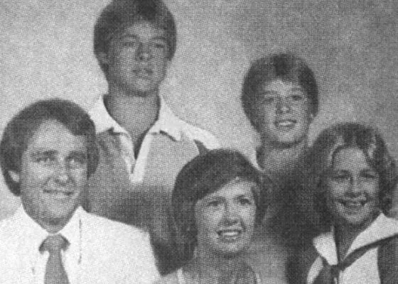
Все они росли в городе Спрингфилд штата Миссури, куда почти сразу после рождения Брэдли переехала семья Питт.
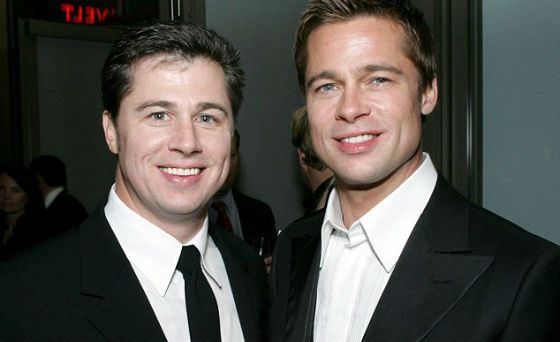
Будучи членами баптистской церкви, родители Брэда Питта воспитывали детей в строгости. Каждое воскресенье семья
ходила в церковь, совместному ужину всегда предшествовала молитва, а все дети четы Питт пели в церковном хоре.
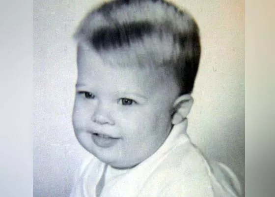
В детстве Брэд был самым обычным ребенком: был флегматичен на уроках, активен и крайне любопытен за пределами
школы, немного занимался спортом, музыкой, принимал участие в школьном самоуправлении и даже состоял в клубе
дебатов. Окончив школу, юноша начал изучать журналистику и рекламное дело в университете Миссури-Колумбии. Ни
дня
не проработав по специальности, он уехал подальше от строгого родительского ока, навстречу своим заветным мечтам
–
в Голливуд.
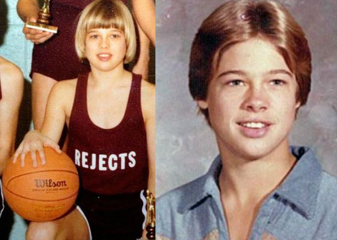
Первые роли
Первым делом Брэдли сократил своем имя до короткого «Брэд» и убрал раздражавшее его первое имя. Но придумать
запоминающийся псевдоним было только половиной дела. На пути к двери, открывавшей вход в киноиндустрию хотя бы с
черного хода, ему пришлось перепробовать множество профессий. Он был и водителем, и мебельным грузчиком, и даже
зазывалой в сети ресторанов «El Pollo Loco». Последняя работа обязывала его разгуливать по улице в костюме
гигантского цыпленка и зазывать гостей поесть жареной курочки.
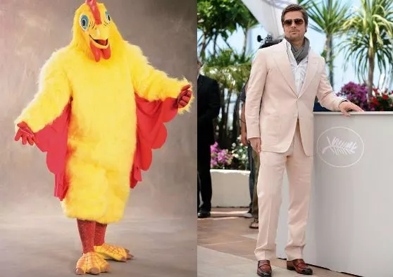
Впрочем, дипломированный журналист все это время лелеял свою мечту стать актером и тратил все заработанные
деньги
не только на съем жилья, но и на актерские курсы.
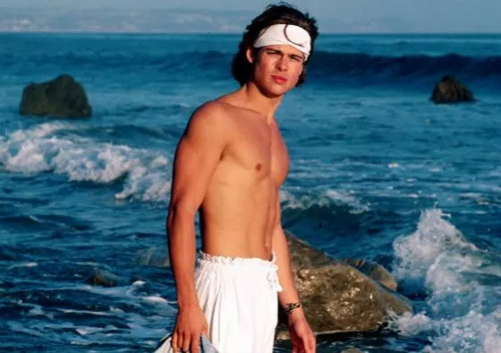
Вскоре ему улыбнулась удача – в 1987 году он снялся в дико популярном в те годы сериале «Даллас». Начинающий
актер ненадолго появился на экране как персонаж по имени Рэнди, бойфренд дочери одного из главных героев.
После этого он получил несколько других предложений о съемках в сериалах. Он засветился в эпизодах сериалов
«Другой мир», «Проблемы роста», «Староста класса», «Байки из склепа», а также появился в небезызвестном
«Джамп-стрит 21», где начинал свою карьеру молодой Джонни Депп.
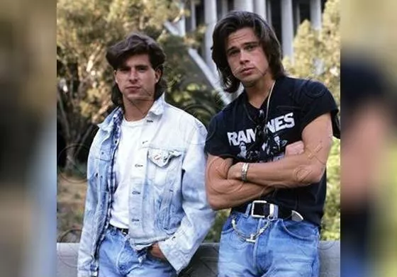
Среди первых работ Брэда Питта известна и реклама чипсов Принглс, транслировавшаяся по ТВ в 1989 году. Кто
знал,
что этот загорелый красавчик-блондин в будущем станет легендой кинематографа?
Главная роль в американо-югославской драме «Темная сторона солнца» стала первой работой Питта в полнометражном
фильме. Он сыграл юношу, который страдает от смертельной аллергии на солнце и вынужден проводить жизнь в четырех
стенах. Фильм получил весьма неплохие отзывы, хоть и попал на экраны лишь 10 лет спустя – до 1998 года часть
отснятого материала считалась утерянной во время гражданской войны в Югославии, где проходили съемки.
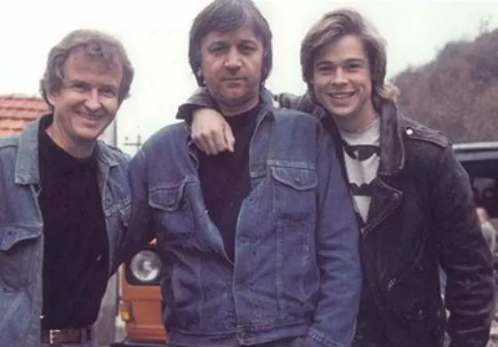
За следующий фильм, комедийный школьный хоррор «Вырезая класс», Брэд Питт получил свой первый серьезный
гонорар
– 12 тысяч долларов. Парень получил роль Дуайта Ингаллса: отвязного старшеклассника-баскетболиста, звезды школы.
Сравнивая молодого Питта с другими актерами фильма, зрители невольно отмечали высокую реалистичность его игры.
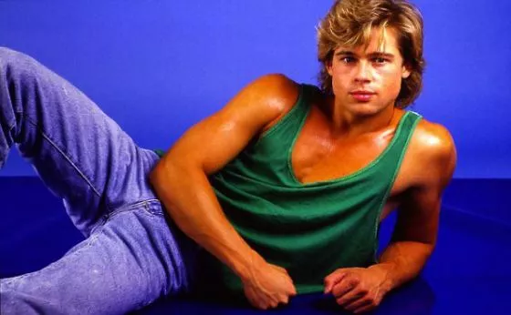
В течение нескольких следующих лет Брэд Питт выступил в самых разных ипостасях: был сутенером и наркоманов
Билли
в драме «Умереть молодой», вороватого паренька Джей Ди в «Тельме и Луизе», беззаботного музыканта в
биографическом
фильме «Джонни-замша»…
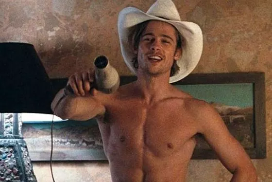
В 1992 году он появился в экспериментальном полурисованном фильме «Параллельный мир» в роли детектива Фрэнка
Харриса, встретившись на съемочной площадке с Ким Бейсингер.
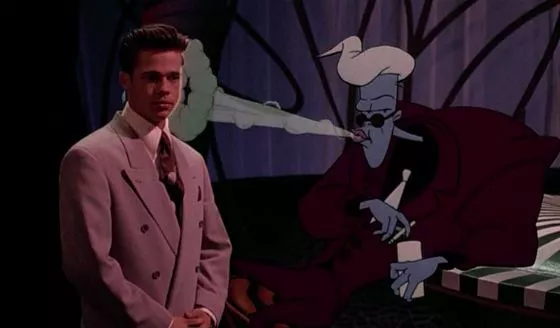
А в драме «Там, где течет река» Питт и Крэйг Шеффер сыграли очень непохожих друг на друга братьев. Брэду
досталась роль младшего, Пола, картежника и любителя выпить, которого объединяет со старшим братом лишь одно –
страсть к рыбалке. Во время работы над лентой Брэду пришлось научиться рыбачить, причем не на крючок, а «на
муху»,
так как режиссер ленты не хотел травмировать рыб.
Личная жизнь
На съёмках триллера «Семь» в 1995 году Брэд сошёлся с Гвинет Пэлтроу[15], которая по фильму играла его жену, и
у
них завязался продолжительный роман. Однако, когда уже стали поговаривать o грядущей свадьбе (помолвка
состоялась
в декабре 1996 года), они совершенно неожиданно заявили o разрыве отношений (в июне 1997 года).
29 июля 2000 года Питт женился на актрисе Дженнифер Энистон[15]. Впрочем, 25 марта 2005 года, после пяти лет
совместной жизни, они расстались. Их брак был официально расторгнут 2 октября 2005 года.
Ещё до оформления развода у Брэда начались отношения с его партнёршей по фильму «Мистер и миссис Смит»
Анджелиной
Джоли. После долгих опровержений 11 января 2006 года пара подтвердила свои отношения, заявив, что Джоли ждёт
ребёнка от Питта.
27 мая 2006 года в Намибии у пары родилась дочь, Шайло Нувель, а 12 июля 2008 года во Франции двойня — мальчик,
Нокс Леон, и девочка, Вивьен Маршелин. Все биологические дети Питта и Джоли появились на свет посредством
кесарева
сечения. Кроме этого, Брэд усыновил всех приёмных детей Анджелины. Сейчас у них шестеро детей: сыновья Мэддокс
Шиван, Пакс Тьен и Нокс Леон; дочери Захара Марли, Шайло Нувель и Вивьен Маршелин[21]. Все носят фамилию
«Джоли-Питт».
23 августа 2014 года Питт и Джоли поженились во Франции, в принадлежащем им замке Мираваль[29]. Стало известно,
что пара заключила жёсткий брачный контракт. В случае измены Питта жене он лишится права совместной опеки над их
детьми[30].
В 2013 году в интервью журналу Esquire Брэд рассказал, что страдает лёгкой формой болезни прозопагнозии[31].
В феврале 2015 года в ряде СМИ появилась информация, что Брэд Питт и Анджелина Джоли усыновили двухлетнего
мальчика из Сирии по имени Мусса[32], однако в апреле того же года официальный представитель пары опроверг
её[33].
19 сентября 2016 года супруга Питта, Анджелина Джоли, подала заявление о расторжении брака. Сообщается, что
причиной развода стали разногласия в методах воспитания детей, а также алкогольная зависимость Брэда Питта.
Джоли
просит опеку над детьми, а Питту предоставить право посещения. Также уточняется, что алиментов актриса не
требует.
«Я очень огорчён этим фактом развода, однако наиболее важным сейчас является благополучие наших детей. Я
сердечно
прошу прессу дать им личное пространство, которого они заслуживают в такой трудный период», — приводит телеканал
CNN официальное заявление Питта[34].
12 апреля 2019 года брак был расторгнут по решению суда[35].